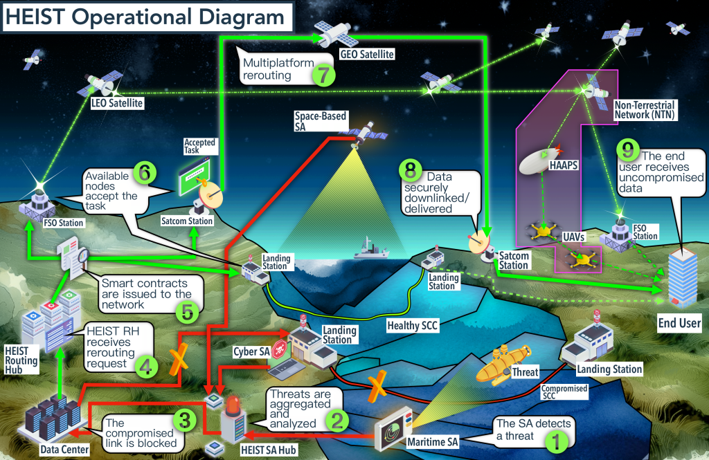

As the Russian cyber attack against Viasat’s KA-SAT satellite network during the first hours of its unprovoked invasion of Ukraine has demonstrated, the ability of military and civilian users to communicate is often the first target and casualty of war. Submarine communication cables (SCCs) present a perfect storm of challenges as they are exposed and vulnerable to both physical elements and digital adversaries. As a solution to foster redundancy and resilience of communication infrastructure, HEIST can immediately service real-world applications.
Physically, SCCs face a growing trend of incidents and threats against their integrity and operations. The most striking has been the 2022 sabotage of the North Stream II pipeline in the Baltic Sea. Given the rising tensions with the Russian Federation following the 2020 Ukraine invasion and the enlargement of NATO to Finland, SCC security and resilience is at considerable risk, especially given the absence of a dedicated monitoring system. Threats to SCCs affect not only their physical integrity but also the integrity, availability, and quality of the information shared among NATO military, institutional, and civilian users.

By incorporating Swedish expertise and strategic insights to submarine infrastructure threats, HEIST is not only responding to current needs but is preemptively preparing for the challenges posed by an expanded NATO territorial and tactical presence in the European High North and Baltic Sea.
Furthermore, the Icelandic researchers’ participation and the Icelandic government’s interest as an end-user provide a unique opportunity to test HEIST in a challenging real-world scenario. Iceland’s geological volatility constantly threatens its Submarine Communication Cables (SCCs), necessitating a robust, resilient communication system capable of withstanding natural disasters especially to ensure the human security and economic resilience of remote communities.